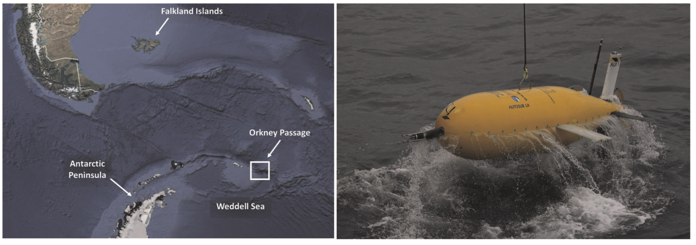
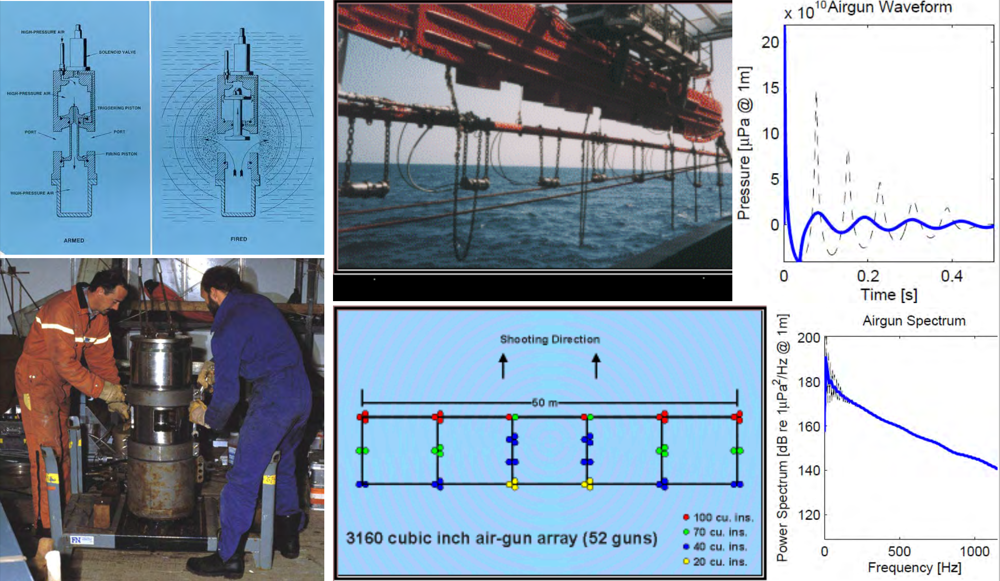

# Using the relationship we saw for an array (delta_theta = lambda/L)
delta_theta = (1500/12000)/(30*3.14/180) # 30deg
print(delta_theta)0.23885350318471338Specific devices: - Multi-beam echosounders: used for bathymetric measurements - Side-scan sonars: sea-bed morphology
|
|
(a,c) ship-board EM120 downward-looking multibeam echosounder (MBES) (resolution 50 m), (b,d) sideways-looking AUV mounted MBES (b) resolution 0.5 m; (d) resolution 5 m and (e) ROV front-mounted MBES (resolution 0.4 m). Whittard Canyon Acesta Wall (a,b,e) and Whittard Canyon Coral Wall (c,d). Figure from K. Roberts et al, New approaches to high-resolution mapping of marine vertical structures, 2017, Nature Scientific Reports
Figure: Side-scan sonar image of schooner Typo, which collided with steamer W.P. Ketcham in October of 1899. The schooner, which was carrying a cargo of coal, was rammed in the stern. The sonar image shows the bow and upright foremast, cargo hatches across Typo’s deck, and the broken stern with a pile of spilled coal. Image Source: Michigan Technological University Great Lakes Research Center. Image courtesy of the Michigan Technological University Great Lakes Research Center. Downloaded from NOAA’s website
|
|
Figures: Scanning with Multibeam Bathymetry. Credit: Wessex Archaeology (Left), Hydro International (Right)
MBES Represented a step change in measuring the ocean
The purpose of a large-scale bathymetric survey is to produce accurate depth measurements for many neighboring points on the sea floor such that an accurate picture of the geography of the bottom can be established.
To do this efficiently, two things are required of the sonar used:
Single beams echosounders fall short in both areas.
Echo sounder is to measure the range to the ocean floor accurately.
In a bathymetric survey, a sonar is most useful if it measures the range to a specific location on the bottom, ideally at a point directly below the vessel doing the survey.
Using the single-beam echo sounder you might assume that the time of the first echo from a ping determines the range to the bottom directly below the survey vessel.
However…
Figure from Multibeam Sonar Theory of Operation
Unstabilised beams: the hull of the ship (and hence the sonar) moves with waves. The magnitude of this problem depends on the severity of the weather, but it can be quite large. Roll and pitch angles of tens of degrees in moderately heavy seas are not uncommon in the open ocean.
Beams are made narrower by making the transducer face larger.
# Using the relationship we saw for an array (delta_theta = lambda/L)
delta_theta = (1500/12000)/(30*3.14/180) # 30deg
print(delta_theta)0.23885350318471338# Using the relationship we saw for an array (delta_theta = lambda/L)
(1500/12000)/(2.5*3.14/180) # 2.5deg2.8662420382165603The solid angle size of the beam determines how accurately a narrow beam sonar can determine the location of depths on the bottom.
An observer recording an echo from such a sonar can determine only that the bottom is located somewhere within that angle at the computed range.
The size of the beam solid angle determines the resolution of a sonar.
The term resolution may apply to the angle itself, or to the physical size of the area on the bottom the beam ensonifies.
When resolution applies to the size of the ensonified area, it is not fixed and it depends on depth.
The deeper a ping goes, the larger an area its fixed solid angle will intersect.
The area of the ensonified bottom is proportional to the beam solid angle and to the square of the depth.
 |
GPS is also available since the 1990s (accuracy of a few meters).
Before we used radio beacons, which at sea had a 100m accuracy.
Before Multibeams and GPS we had the uncertainty of the interpolatin and of the navigation
More in general multibeams require knowledge of sound speed profile and ship motion (roll, pitch and heave)
Can be installed on ship or smaller versions are available for ROV/AUVs/UxVs
|
|
A hydrophone array aligned parallel to the projector array receives echoes from all locations along a similar strip of the ocean floor.
If you want to accurately locate echoes on the ocean floor, this is not very useful.
The projector array will cause echoes all along the ensonified strip, and the hydrophone array will pick up echoes from a similar strip.
There will be no way of telling where the echoes are occurring along these strips
If the projector and hydrophone arrays are perpendicular to each other, the strip of the ocean floor ensonified by the projectors will intersect with the strip of the ocean floor observed by the hydrophones
This occurs in only a small area with dimensions that correspond approximately to the projector and hydrophone array beamwidths
Echoes occur along the entire ensonified area,
Sound may be received from the entire observed area,
However only a small part of the bottom is both ensonified by the projector array and observed by the hydrophone array beam, i.e., where the two strips overlap.
This is called, Mills Cross arrangement (named after a pioneering radio astronomy instrument built in New South Wales, Australia)
|
|
Comments: - With a Multibeam, sound speed plays a bigger role than with the single beam echosounder (where we only go straight) - When we transmit with a slant angle, if the sound speep profile is not constant with depth (and it is not), we have refraction
|
|
It is important to know the sound speed profile and keep into account how rays might bend (e.g., impact on footprint on the seabed)
This is important in MBES and not in single beam echosounder (where we are insterested only in the ship-to-bottom straight path)
If bottom roughness is \(\sigma = 10cm\), then wavelength should be \(\lambda\approx10cm\)
\[\lambda = \frac{c}{f} = \frac{1500}{f} \Rightarrow 0.1 = \frac{1500}{f} \]
\[ f = \frac{1500}{0.1} = 15kHz \]
\(\sigma\) can be easily smaller than \(10cm\) (e.g., clay) and MBES frequencies can often go >100kHz
Limits to their range
Decreasing frequency to increase range MBES constraint their maximum resolution
Remember that \(\Delta \theta\) (amplitude of the beam) depends on the frequency and we have a larger patch on the seabed (and the resolution decreases accordingly)
|
|
Some MBES can use multiple frequencies simultaneously.
All the previous limitations still hold, using multiple frequencies can reduce the amount of noise encountered.
Rather than not having some (high frequency) depths, these data points can be filled in using lower frequency data (although with a larger footprint and thus showing less detail).
The final data density is defined by the number of beams (depths) and the ping rate, or the number of swathes that the MBES can measure per second.
The ping rate depends on the water depth, and can be as high as 60 pings per second in shallow water.
A traditional MBES measures a single depth per beam per ping.
In general, the ‘first depth strong enough to be detected’ will result in the depth displayed.
Less strong depths that may be closer to the multibeam are not detected.
Also, a strong reflector close to the transducer may give a depth rather than the weaker bottom below it.
Modern MBES systems reads water column data.
The water column of each beam is divided into a number of ‘bins’.
The MBES now looks for a return within each bin for each beam for each ping.
MBES to measure multiple reflections and thus create 3D images of objects in the water column (or to see the bottom through, for example, vegetation).
Many beams, multi-frequency and a high ping rate make the amount of data gathered enormous.
Time spent processing is not negligible
|
|
Where in the past the transmitted signal was a ‘continuous wave’ (CW),
Today MBES often also transmit what is called an FM or CHIRP (Compressed High Intensity Radar Pulse) signal. - Main advantage of the CHIRP is a longer range with better range resolution.
For a CW type MBES, the range resolution is defined by the pulse length of the signal,
For a CHIRP type MBES the range resolution is defined by the bandwidth of the signal,
This makes it possible to transmit longer pulses and therefore to have more power in water.
Movement is always present
MBES has always an angle (roll, pitch and heave in particular) with respect to the sea surface
Measure movement of the ship and use it during the calculation of the depth
MBES are complex and cost much more than single beam echosounder (1k-1M USD)
|
|
|
|
|
|
|
|
|
|
|
|
|
|
|
|
|
Figure: A multibeam-sonar image of the underwater archaeological site near the island of Pianosa, off the west coast of Italy. The site contains approximately 100 amphorae of different origins and epochs
Sidescan sonars are primarily designed to provide “acoustic images” of the seafloor, with high resolution
A sidescan sonar system consists of a recording device, an underwater sensor (a towfish with a transducer on the port and starboard side, respectively), and a tow cable to connect the two
Side-scan sonar does not (with the exception of interferometrics) have the capacity to incorporate information about the bottom topography,
If the bottom is not flat it requires additional bathymetric data on which to base processing corrections.
Without taking these factors into account, the intensity of the backscatter return is significantly affected by bathymetric variation, to the point that it is of limited usefulness for quantitative analysis.
Traditional analysis of SSS is primarily image-based, using the constructed sonograph for visual interpretation.
Records the backscatter signal from the bottom
Leverage Tx beamforming
Measures the return signal
For each Tx we have a return signal as a function of time and with an intensity that is proportional to the received intensity
Frequency of operations: 100-700 kHz (typically between 300-400 kHz)
For this reason, side scans where towed systems rather than being installed on the ship’s keel
|
|
 |
Sidelobes look behind the main transmit direction
Range: The maximum distance from the transducers that the SONAR signal can detect usable signals.
Slant range: The straight-line distance from the tow fish to an object at any given location
Range delay: The distance (or range) that the sonar device is told to wait after pinging before it starts recording acoustic returns. The most common use for range delay is to not record the water column – i.e. the time for the ping to reach the seafloor in a straight line (first return)
|
|
|
|
|
|
|
|
|
|
|
A more complex example
|
|
Figure: Courtesy of Hydroid, 2010
Given the specific geometric mounting of the sidescan sonar - We do not see very well right below the sonar - Shadows are compressed and small - And far away from it - Shadows of objects at the edge are cut off - Ideal range is mid-range
|
|
|
|
|
|
| Near Nadir: high backscatter, short shadow | Sweet Area: high backscatter, longer shadow |
|
|
|
|
|
Note: - difference in texture between the two types of bottom - color change in the right image. This is due to change of gain of the received signal (no natural surface would produce this change in reflectivity)
|
|
|
|
|
|
|
 |
 |
|
|
|
|
|
We can combine SSS and multibeam (e.g, install on the same vehicle)
Careful with frequency choice or through time division (mission scheduling)
Some SSS can operate at multiple frequencies
Interferometric SSS
Newer development (10-15Y)
Simple concept but difficult to engineer
The same point is ensonified by a number of different pings from different locations
Identifing the time of arrivals of each point
|
|
|
Backscatter from a single ping, at time \(t_1\): \[ b_{1} = b_{true} + n_1 \]
Having multiple pings: \[ b_{HD} = b_{1} + b_{2} + b_{3} \]
Since the point is the same,
\[ b_{HD} = 3b_{true} + n_1 + n_2 + n_3 \]
if the noise has zero mean, we have a gain in the true backscatter value and a decrease (we are averaging) of the noise associated to different ping.
The identification of the reception times (\(t_1\), \(t_2\), \(t_3\)) is critical. If I use wrong times, I am summing up backscatters from different points of the bottom and results are wrong.
The association of time to spatial coordinates is difficult and depends on the vehicle navigation. In this case the relative navigation across the pings is important and we often talk of micronavigation.
Only a minor numer of systems are able to do it (e.g., Kongsberg).
Called Synthetic Aperture, because it is equivalent to build an antenna of sidescan sonars (receivers)
Terminology - Length of antenna: aperture - Length of array of sidescans is synthetic because it is built through digital processing
|
|
|
|
| SSS 384kHz (left) and SAS 300 kHz (middle) |
Inverted colorscale for left SSS image: shadows are white
SSS is high frequency of SAS but has lower resolution
Roman Dolias
Off the coast of Isola d’Elba
60m depth
|
 |
| DYNOPO Cruise, NOC |
 |
 |
 |
 |
Salavasidis et al, “Terrain‐aided navigation for long‐range AUVs in dynamic under‐mapped environments”, Journal of Field Robotics
So far we have focused on exploring the surface of the bottom
Often we would like to understand what is behing the surface (e.g., oil and gas exploration)
To produce maps not only of the surface of the bottom but also of the layers underneath we use sub-bottom profilers
Similar to echosounders (ping right below) but at lower frequencies
Typical frequency: 1kHz-7kHz (most often 3.5kHz)
Normal incident reflections from seabed and substrata
Frequencies are low enough that some of the energy is transmitted through the seabed
Coloring pixels based on the backscattering strength of received pulses we obtain layering maps similar to what is shown below
|
|
|
Sediments are soft and we have lower reflections
Hard bottoms have higher reflections
Low frequency and hence low resolution
Figure: from www.geoviewing.com and Lurton 2002
When OBS sensors are deployed on the sea bottom and locked on the bottom, it is possible to investigate the structure of the bottom in more details
This makes it possible to read S-Waves as well as P-Waves and to obtain directionality
Refractions arrive at the different sensors in different ways
Figure: from geology.gsapubs.org and seismo.berkeley.edu
Explosives (TNT): 10Hz-1kHz
Air-guns: < 100Hz
Air-guns array: < 100Hz
Water-guns: 50Hz-1kHz
Sparkers: 100Hz-3kHz
Source Levels are very high, and given that they have low frequency, signals are mostly geometrically attenuated and propagate for extremely long ranges.
Acoustic and environmental assessments are mandatory to avoid affecting marine life (e.g., marine mammals)
|  |
Large and complex systems, large ships needed to deploy
Tx signals: sequence of signals (Figure Airgun Waveform, dashed line) that have multiple peaks
Arrays of airguns can be used to coordinate their firing and attenuate the problem above